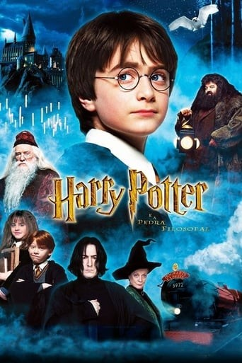
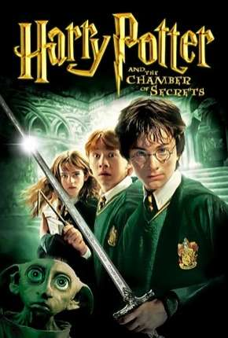

Recomendados
Harry Potter e a Pedra Filosofal
Aventura e Fantasia · 2001 · L · Áudio em português
Duração: 1h 42 Min
Sinopse:
Harry Potter é um garoto órfão que vive infeliz com seus tios, os Dursleys. Ele recebe uma carta contendo um convite para ingressar em Hogwarts, uma famosa escola especializada em formar jovens bruxos.
Duração: 1h 42 Min
Sinopse:
Harry Potter é um garoto órfão que vive infeliz com seus tios, os Dursleys. Ele recebe uma carta contendo um convite para ingressar em Hogwarts, uma famosa escola especializada em formar jovens bruxos.
Harry Potter e a Câmara Secreta
Aventura, Fantasia, Família· 2002 · L · Áudio em português
Duração: 2h 41 Min.
Sinopse:
Após as sofríveis férias na casa dos tios, Harry Potter se prepara para voltar a Hogwarts e começar seu segundo ano na escola de bruxos.
Duração: 2h 41 Min.
Sinopse:
Após as sofríveis férias na casa dos tios, Harry Potter se prepara para voltar a Hogwarts e começar seu segundo ano na escola de bruxos.
Harry Potter e o Prisioneiro de Azkaban Família Fantasia Ação e aventura· 2004 · L · Áudio em português
Família Fantasia Ação e aventura· 2004 · L · Áudio em português
Duração: 2h 22Min.
Sinopse:
O terceiro ano de Harry Potter em Hogwarts começa mal quando ele descobre que o assassino Sirius Black escapou da prisão de Azkaban e está empenhado em matá-lo.
Família Fantasia Ação e aventura· 2004 · L · Áudio em portuguêsDuração: 2h 22Min.
Sinopse:
O terceiro ano de Harry Potter em Hogwarts começa mal quando ele descobre que o assassino Sirius Black escapou da prisão de Azkaban e está empenhado em matá-lo.
Harry Potter e o Cálice de Fogo Suspense Ação e aventura Ficção científica Fantasia
Família· 2005 · L · Áudio em português
Suspense Ação e aventura Ficção científica Fantasia
Família· 2005 · L · Áudio em português
Duração: 2h 37Min.
Sinopse:
Harry retorna para seu quarto ano na Escola de Magia e Bruxaria de Hogwarts, junto com os seus amigos Rony e Hermione. Desta vez, acontece um torneio entre as três maiores escola de magia.
Suspense Ação e aventura Ficção científica Fantasia
Família· 2005 · L · Áudio em portuguêsDuração: 2h 37Min.
Sinopse:
Harry retorna para seu quarto ano na Escola de Magia e Bruxaria de Hogwarts, junto com os seus amigos Rony e Hermione. Desta vez, acontece um torneio entre as três maiores escola de magia.